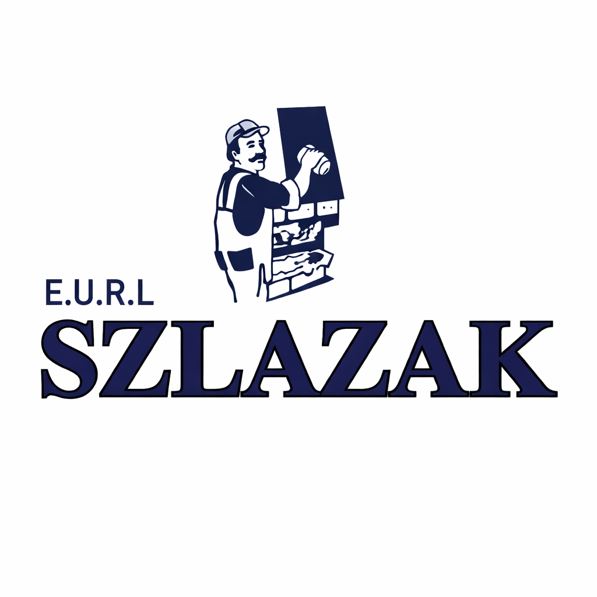

BTS SIO
STAGES
Trois expériences qui montrent une progression entre consolidation technique, réalisation web et digitalisation d’outils professionnels.
BTS SIO
Trois expériences qui montrent une progression entre consolidation technique, réalisation web et digitalisation d’outils professionnels.
2024
Mon premier stage de BTS SIO s’est déroulé chez AgroBio à Bar-le-Duc, du 27 mai 2024 au 5 juillet 2024. Il m’a permis de consolider mes bases en PHP, Java et programmation orientée objet.
Une première vraie progression technique et une résolution de problème sur WampServer et phpMyAdmin.
PHP, Java, POO, environnement local et autonomie technique.
2025
Ce deuxième stage, réalisé à Villers-le-Sec du 6 janvier 2025 au 15 février 2025, était centré sur la création d’un site web professionnel et sa mise en ligne.
Une mission menée jusqu’à la publication finale du site pour une entreprise réelle.
HTML, CSS, JavaScript, hébergement, nom de domaine et respect d’une identité visuelle.
2026
Mon troisième stage, du 12 janvier 2026 au 20 février 2026, a porté sur un site vitrine et une application Laravel pensée pour la gestion interne de l’entreprise.

Point marquantUne vraie application web pensée pour les besoins du terrain, avec plus de logique métier et de responsabilités techniques.
Ces trois stages montrent une évolution logique vers des projets plus complets et plus autonomes.